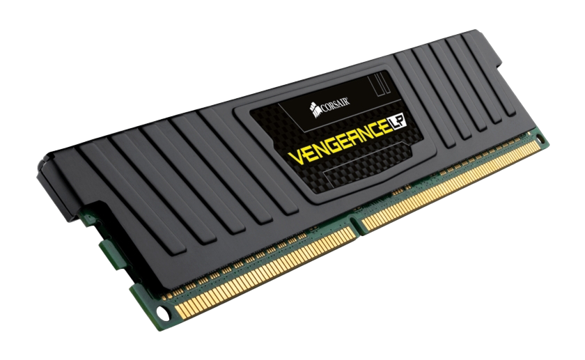

| Componentes de la computadora |
|---|
Memoria Ram La memroria RAM es la memoria principal de un dispositivo donde se almacena programas y datos informativos, la RAM es conocida tambien como una memoria volátil lo cual quiere decir que los datos no se guardan de manera permanente, es por ello que cuando deja de existir una fuente de energía en el dispositivo la información se pierde. Asimismo la RAM puede ser reescrita y leída constantemente.Los módulos de RAM son integrantes del hardware que contiene circuitos integrados que se unen al circuito impreso, estos módulos se instalan en la tarjeta madre del ordenador. Las memorias RAM forman parte de ordenadores, consolas de videojuegos, teléfonos móviles, tablets y entre otros aparatos electrónicos. Existen 2 tipos básicos de memoria RAM; RAM dinámica (DRAM) y RAM estática (SRAM), ambas utilizan diferentes tecnologías para almacenar los datos. La RAM dinámica (DRAM) necesita ser refrescada 100 veces por segundos, mientras que la RAM estática (SRAM) no necesita ser refrescada tan frecuentemente lo que la hace más rápida pero también más cara que la memoria RAM dinámica (DRAM). |
|
|